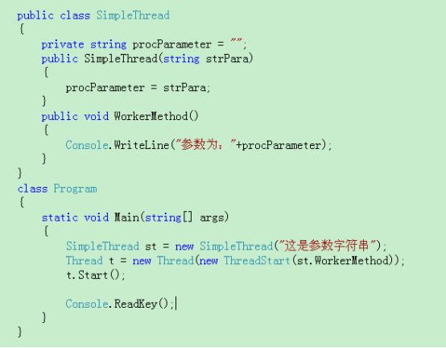

原文连接:https://www.cnblogs.com/schangxiang/p/11286767.html
1、System.Threading命名空间
System.Threading命名空间提供了使得可以多线程编程的类和接口
其中
（1）Thread类构成了C#多线程编程的支柱，他用于创建并控制线程
（2）ThreadStart是一个委托，派生自System.MuliticastDelegate,通过ThreadStart来创建线程调用方法的引用，并且将该引用通过创建一个Thread类型的对象来创建一个线程
（3）ThreadPriority和ThreadState是枚举，派生自Enum，表示线程的优先级和线程的状态
（4）ThreadAbortException和StateException是定义的异常类，派生自SystemException
2、创建和启动线程
ThreadStart是一个委托 语法是：delegate void ThreadStart()
线程被启动之后，该线程就会进入就绪状态，等待CPU资源
3、Thread类
Sleep()方法设置将当前线程暂停或阻塞的毫秒数，在设定的时间后，线程会进入就绪状态，等待系统进行调度。Sleep方法只对当前执行的线程起作用！
这里还涉及两个方法Suspend()和Resume()方法，分别是挂起线程和继续已挂起的线程，虽然这功能很好，但是由于这两个方法运行会出现不可预料的结果，因此不建议使用。并且，微软已经将这两个方法标记为过时，在未来版本中不再使用。
Abort()方法会终止线程
Join()方法用于阻塞调用线程，直到某个线程终止时为止，如果不懂Join方法，可以参看本笔记的详细说明
Thread类的Join()方法能够将两个交替执行的线程合并为顺序执行的线程。比如在线程B中调用了线程A的Join()方法，线程A将插入线程B之前，直到线程A执行完毕后，才会继续执行线程B。
4、线程的生命周期
******重要部分******************
线程有下面的几个状态：未启动、开始（即等待）、运行、挂起、停止。
当一个Thread类的实例被创建时，线程进入未启动状态
当调用了Start()方法之后，线程进入就绪（或等待）状态，即等待CPU资源，一旦这个线程得到了CPU资源，那么就进入运行状态
某一个线程完成以后，就正常的进入停止状态
线程通过Abort()方法强行的令其终止，最后进入停止状态
线程通过Sleep()方法或Join()方法来进入休眠或阻塞状态，休眠和阻塞状态的线程也能回到运行状态。
1、让一个线程进入睡眠状态
当我们创建一个线程后，我们需要调用线程对象的Start()方法来调度那个线程。在这时，CLR将会为作为构造函数参数传递给线程对象的方法地址分配一个时间片。一旦线程开始执行，它就可以在操作系统处理其他线程时回到睡眠状态或者退出状态。
我们可以使用线程类的Sleep()方法让一个线程进入睡眠状态。如果你正在等待一个资源并且你想在稍后继续尝试访问这个资源时，Sleep()方法是很重要的。举个例子，假设你的程序由于无法访问需要的资源而导致其不能继续执行时，你可能想要在几毫秒之后尝试继续访问资源，在这种情况下让线程在再次尝试访问资源之前睡眠一段时间是一个很好的方式。
Sleep()方法有两种重载方式。
第一种重载方法有一个整型参数，并会按照指定的毫秒时间暂停线程执行。例如，如果你向线程传递值100，那么线程将会暂停100毫秒。这个方法将会让线程进入WaitSleepJoin状态。
第二种重载方法有一个TimeSpan类型参数，当前线程会按照TimeSpan的值暂停一段时间。TimeSpan是System命名空间中的一个类。TimeSpan有一些很有用的属性并会返回基于时钟时间间隔。我们可以使用FromSeconds()和FromMinutes()来确定睡眠时间。
2、终止一个处于Sleep或Join状态的线程
当让一个线程睡眠时，它实际会进入WaitSleepJoin状态。如果线程处于睡眠状态，那么在它超时退出之前唯一可以唤醒线程的方式是使用Interrupt()方法。Interrupt()方法将让线程回到调度队列中去。
当计数器的值为10, 20 和 30 时第一个线程会睡眠。第二个线程会检查第一个线程是否已经进入睡眠状态。如果是的话，它将中断第一个线程并使它回到调度队列中去。Interrupt()方法是让睡眠线程重新醒来的最好方式，当线程等待的资源可用且你想让线程继续运行时你可以使用这个方法
5、线程传参
有两种方法：
（1）使用ParameterizedThreadStart委托
该委托的语法：
当我们使用Thread类创建线程的时候，在Thread类的构造里就可以传一个ParameterizedThreadStart对象，这样我们在启动（Start）该线程的时候就可以调用Start方法的带object类型参数的版本，即在启动线程时为线程传参
（2）将线程调用的方法定义为实例方法

6、线程优先级

这里要澄清一个问题，线程优先级高，只是意味着优先级高的线程占有更多的cpu时间，并不意味着一定会优先执行完优先级高的线程。
操作系统有他的线程调度算法，因此不能保证操作系统会接受设置的优先级，毕竟操作系统还有其他的线程，不仅仅是只执行你程序的线程。